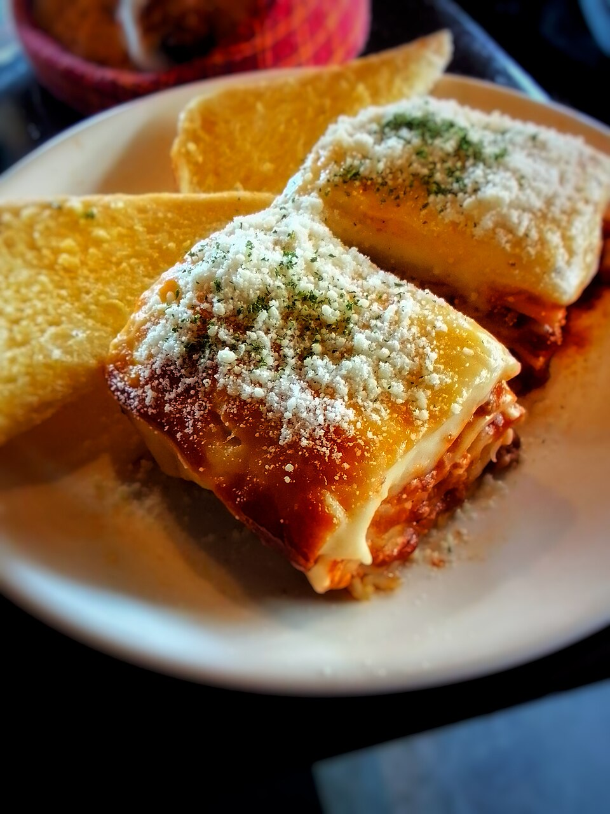

Lasanha à bolonhesa
Rende 6 porções · 40 min de preparo · 45 min de forno

Ingredientes
- 500 g de massa de lasanha pré-cozida
- 500 g de carne moída
- 1 cebola grande picada
- 3 dentes de alho amassados
- 2 latas de molho de tomate
- 400 g de mussarela fatiada
- 300 g de presunto fatiado
- 100 g de queijo parmesão ralado
- Azeite, sal, pimenta-do-reino e orégano a gosto
Modo de preparo
- Aqueça um fio de azeite em uma panela e refogue a cebola e o alho até dourarem.
- Acrescente a carne moída e mexa até perder a cor rosada, soltando os pedaços com a colher.
- Junte o molho de tomate, tempere com sal, pimenta e orégano e cozinhe em fogo baixo por 20 minutos.
- Espalhe uma camada fina de molho no fundo de um refratário.
- Monte as camadas na ordem: massa, molho, presunto e mussarela. Repita até acabar os ingredientes.
- Termine com molho por cima e cubra tudo com o parmesão ralado.
- Cubra com papel-alumínio e leve ao forno a 180 °C por 30 minutos.
- Retire o papel-alumínio e asse por mais 15 minutos, até o queijo gratinar.
- Espere 10 minutos antes de cortar — assim as fatias não desmontam.
Dica: se a massa não for pré-cozida, deixe o molho um pouco mais líquido. A massa absorve esse líquido enquanto assa.